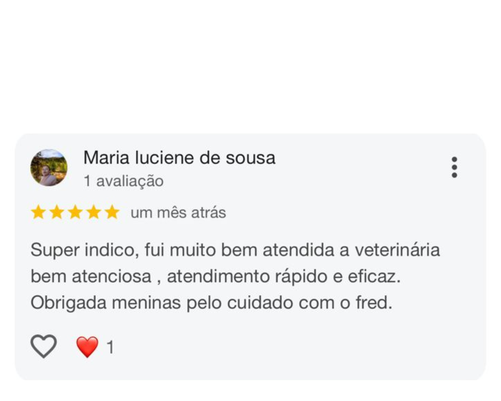

.jpg)
.jpg)
.jpg)


.png)
.png)

Consultas e atendimento clinico
Consultas de rotina e checkup
Vacinação
Vacinação obrigatória | Controle de calendário vacinal personalizado
Exames laboratoriais e Dagnósticos
Hemograma e bioquímica sanguínea | Exames de urina e fezes | Exames hormonais e testes rápidos | Ultrassom | Raio -x
Serviços de Estética e Bem-Estar
Banho e tosa (higiênica, completa e terapêutica)
Odontologia Veterinária
Limpeza de tártaro (profilaxia) | Tratamento de doenças bucais | Extrações dentárias
Cirurgias
Cirurgias eletivas (castração, retirada de tumores) | Cirurgias de urgência | Cirurgias ortopédicas
Especialidades
Dermatologia | Cardiologia | Oftalmologia | Ortopedia | Neurologia
Internação e Cuidados Intensivos
Internação com monitoramento 24h
Nossa clínica foi pensada para oferecer cuidado completo e acolhimento em cada etapa da vida do seu pet. Contamos com um corpo clínico experiente e dedicado, formado por uma médica veterinária patologista, duas cirurgiãs especialistas e uma veterinária focada em atendimentos de urgência e emergência.Nossa estrutura inclui um centro cirúrgico totalmente equipado, setor de internação com monitoramento, consultório exclusivo com ambiente cat friendly, além de laboratório próprio para exames laboratoriais. Também realizamos exames de imagem, como raio-X e ultrassonografia, garantindo agilidade e precisão nos diagnósticos.Trabalhamos para unir conhecimento, estrutura e afeto no cuidado com quem mais importa: o seu pet
Na Clínica Veterinária Popular Afetto, acreditamos que todo animal merece cuidado, carinho e saúde, independentemente da condição financeira de seus tutores. Nosso nome vem do que acreditamos: afeto em cada atendimento.Somos uma clínica popular, mas não abrimos mão da qualidade, do respeito e da ética. Nossa missão é oferecer atendimento veterinário acessível, humanizado e eficiente, promovendo o bem-estar dos pets e a tranquilidade de quem os ama.Aqui, você encontra uma equipe dedicada, apaixonada por animais e comprometida com a vida. Queremos ser mais que uma clínica: queremos ser um espaço de confiança e acolhimento para você e seu companheiro de quatro patas.